Mysterious Visitors and Pumpkin Pie Highlight Brown University's
Spring Weekend
PROVIDENCE, RI — Brown University's annual Spring Weekend took an
unexpected turn this year, featuring a peculiar series of
incidents involving extraterrestrial visitors, oversized pumpkin
pies, and an elusive tennis racket.
The weekend's festivities began normally, with students eagerly
anticipating performances by musical artists and enjoying food
trucks lining the Main Green. However, events quickly escalated
Saturday evening when attendees reported sightings of
unidentified flying objects hovering above University Hall.
Eyewitness accounts described the crafts as resembling giant
metallic Frisbees, quietly emitting disco lights and gentle hums
resembling EDM beats.
Jessie Langevin '26 expressed amazement rather than fear.
"At first, I thought it was just part of the lighting effects from the stage,"
she said.
"But then, a creature stepped out and asked if anyone had spare pumpkin pie."
The extraterrestrial visitors, described by attendees as friendly
and approximately four feet tall, made an unusual demand upon
landing: a slice of homemade pumpkin pie. In an unprecedented
demonstration of community spirit, the student body rapidly
organized a pie-baking contest in the Sharpe Refectory kitchens.
Over 200 pies were produced, with students frantically sourcing
pumpkins from local farms.
"It was surreal," said Luis Patel '26, a baking participant.
"I never thought my grandmother’s pumpkin pie recipe would become an interstellar diplomatic asset."
The aliens, after sampling pies from the contest, awarded first
place to a recipe from Maya Thompson '25, praising its subtle
blend of nutmeg and cinnamon. As a gesture of goodwill, they
gifted the student body a golden tennis racket, reportedly
capable of improving any player's backhand exponentially.
Unfortunately, the racket mysteriously disappeared within hours,
leading to widespread speculation about its whereabouts.
University officials issued a statement acknowledging the bizarre
turn of events but insisted that Spring Weekend had been a
success.
"While unusual, this experience exemplifies Brown's commitment to embracing diverse perspectives, even
extraterrestrial ones,"
remarked Dean Vanessa Jorgensen.
"We do request, however, that whoever borrowed the golden tennis racket return it promptly."
Campus police are currently investigating the disappearance of
the racket. Witnesses report last seeing it used in an impromptu
doubles match involving two philosophy professors and an alien
duo, which resulted in a decisive victory for the
extraterrestrials.
Despite the strange happenings, students agreed the weekend would
be remembered fondly. "I mean, aliens are one thing," said
Theo Kim '28.
"But a really good pumpkin pie? That’s unforgettable."
Alien Bands Rock Brown University's Spring Weekend
PROVIDENCE, RI — Following the bizarre yet delightful events
involving extraterrestrial visitors at Brown University's Spring
Weekend, students were treated to another surprise: musical
performances by alien bands that dazzled audiences with
out-of-this-world sounds.
After their successful pumpkin pie negotiations, the friendly
visitors offered an encore of sorts by introducing two bands
from their home planet. The first group, "The Cosmic Muffins,"
immediately captivated the crowd with their unique blend of
intergalactic jazz and rhythmic alien chants. Their front-alien,
known simply as Zorb, impressed attendees with a glowing crystal
instrument emitting melodies described by Rebecca Foster '25
as "what a shooting star might sound like if it could sing."
"I've never heard anything like it," said Marcus Diaz '28.
"It’s like if jazz met electronic music, but also whales, somehow."
Next up was "Saturn Rings," whose energetic set had students
dancing late into the night. Band members performed using
instruments resembling glowing tennis rackets, which immediately
sparked renewed rumors about the whereabouts of the previously
vanished golden racket gifted by the aliens.
University officials, while initially puzzled, confirmed that the
racket used by "Saturn Rings" was not the missing golden racket,
but a remarkably similar alien-made instrument that resonated at
frequencies capable of inducing pure joy.
The aliens concluded their performance by thanking the Brown
community for their hospitality and exceptional pie. As their
spaceship ascended amidst enthusiastic cheers, student
representatives publicly invited them back for next year’s
Spring Weekend.
Dean Vanessa Jorgensen praised the aliens' performances, stating,
"These interstellar artists brought exactly the creative energy and cosmic diversity that Brown cherishes.
We hope they’ll become regulars on our Spring Weekend roster."
Students, meanwhile, continued to speculate on the mystery of the
missing golden tennis racket, now even more intrigued by its
alien-crafted musical counterpart.
"Honestly, aliens or not, it’s the best Spring Weekend ever,"
concluded Emma Lin '27.
"Pumpkin pie, cosmic jazz, and alien tennis rackets? That’s peak Brown."


 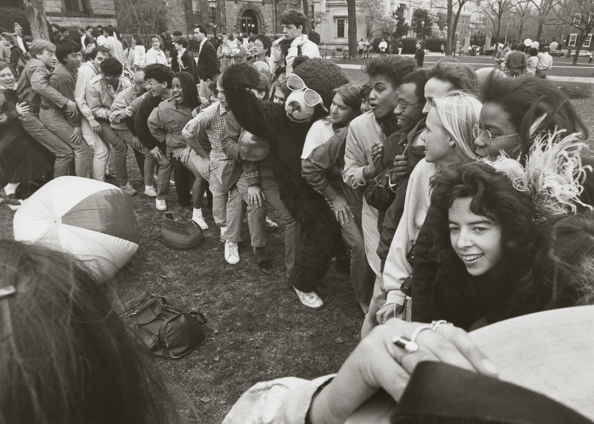
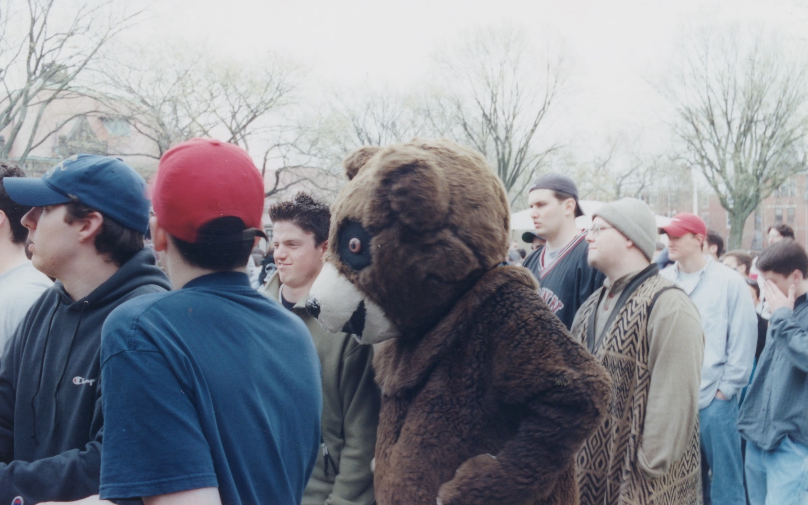
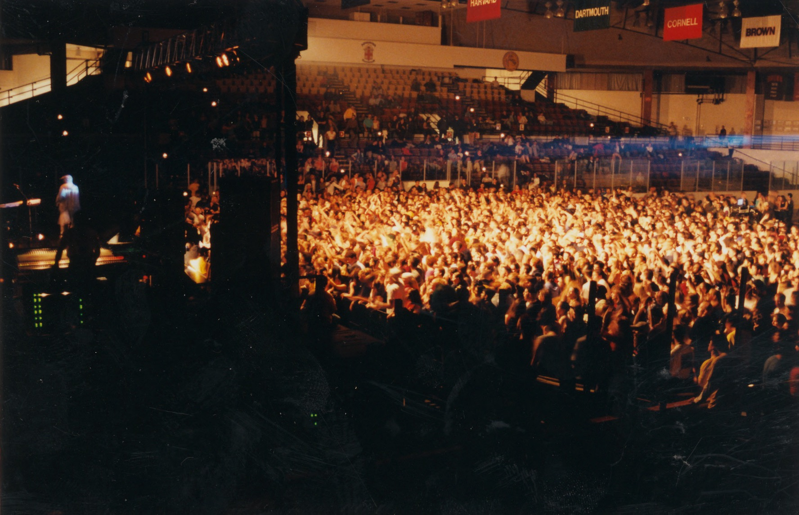
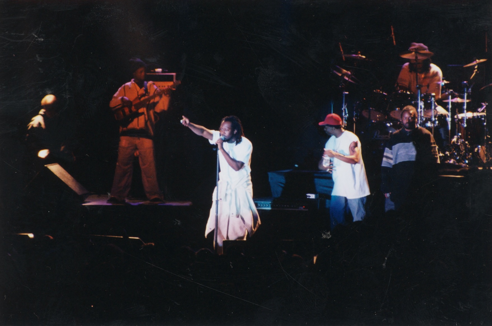
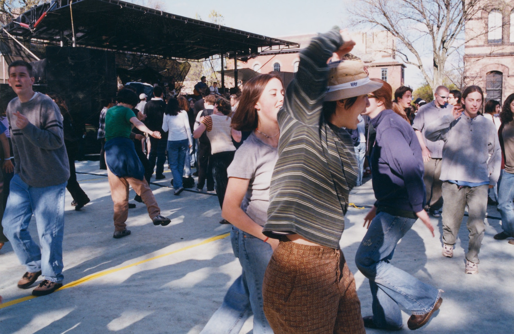
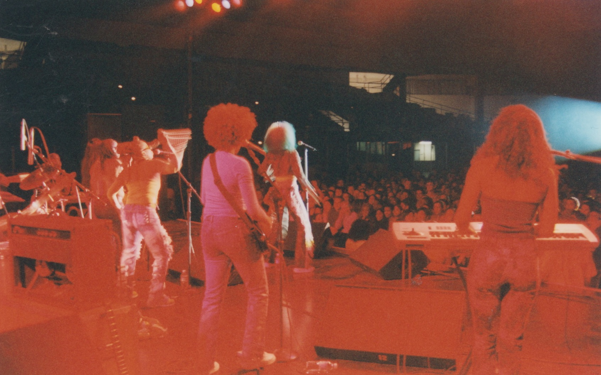
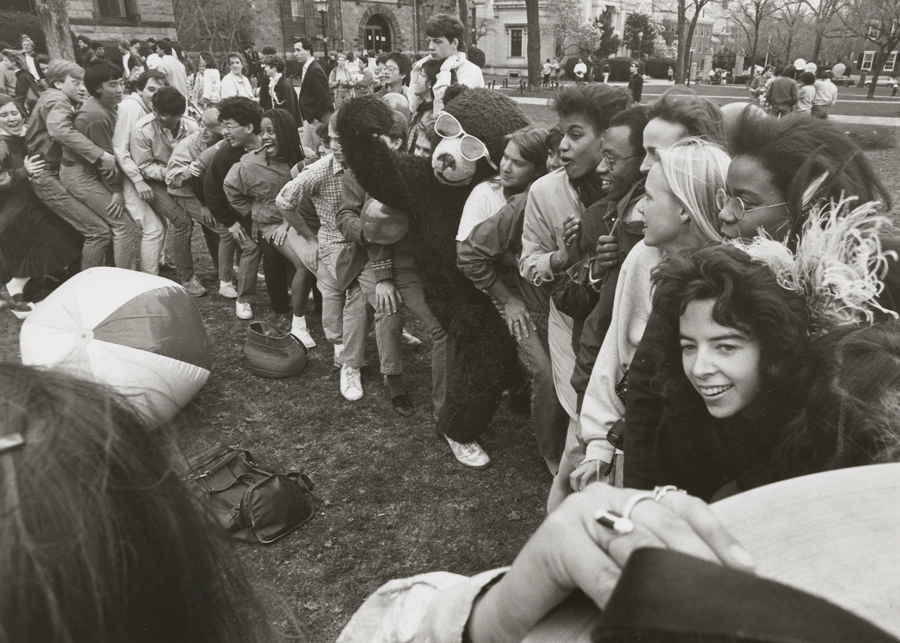
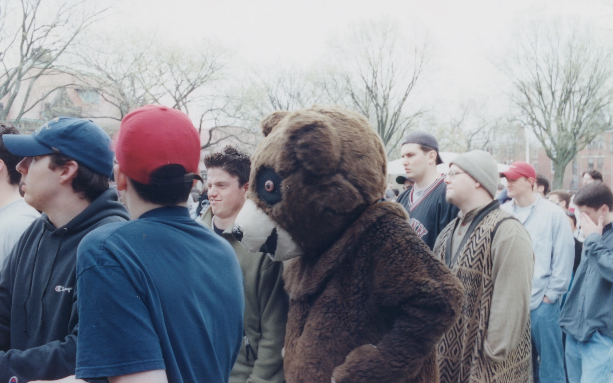
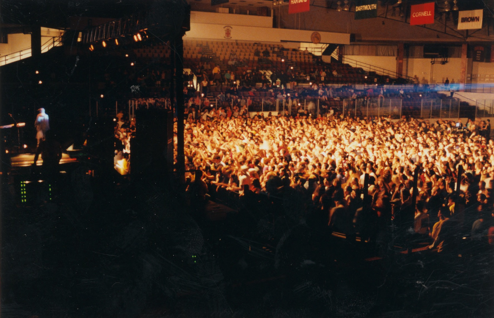
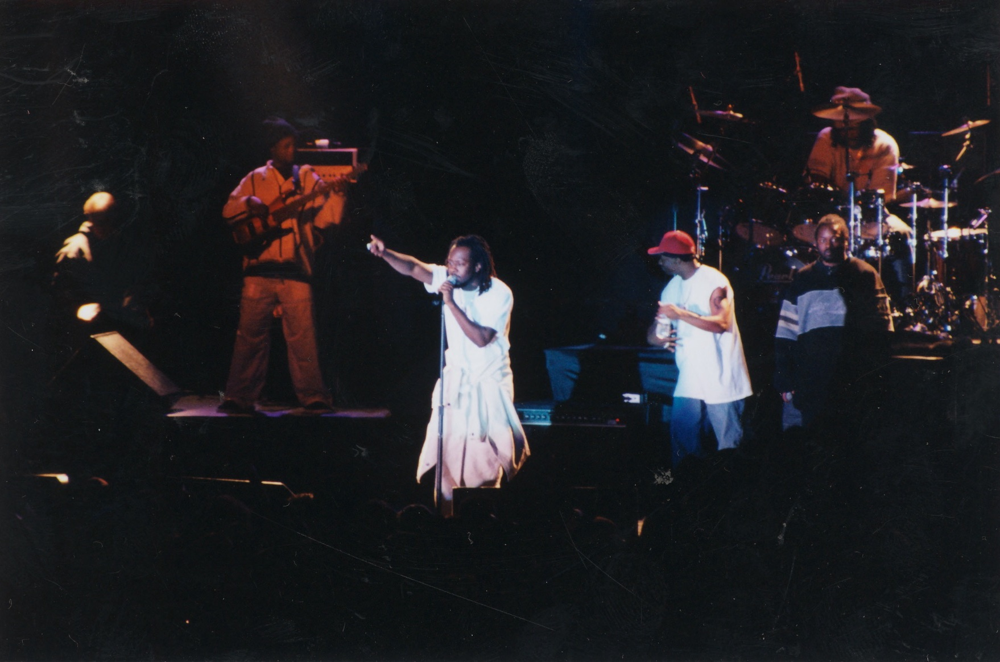
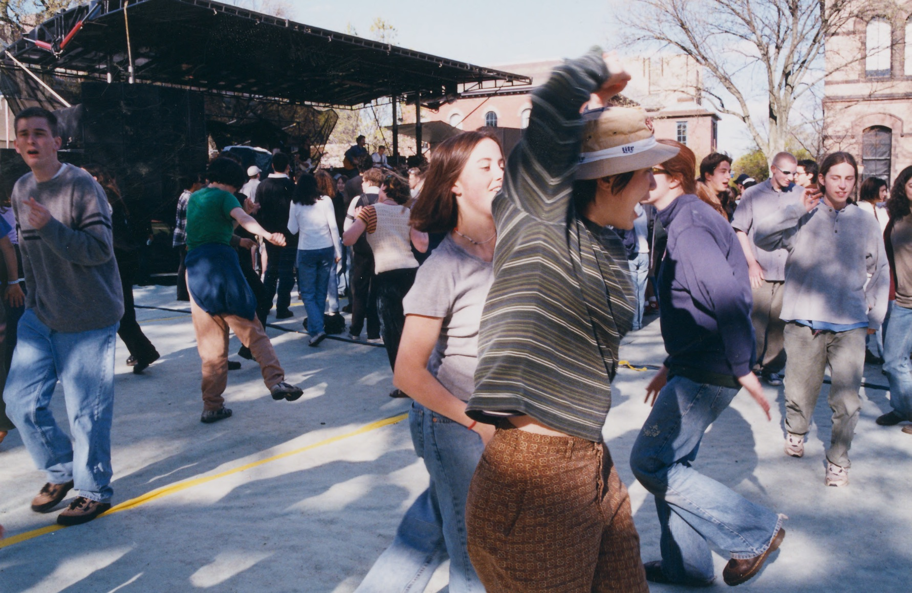
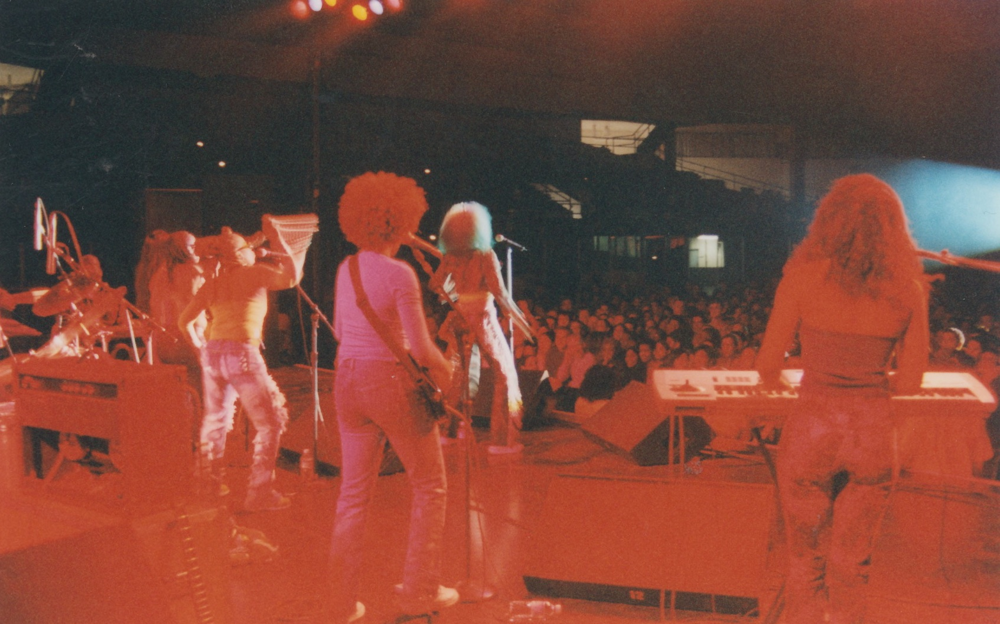